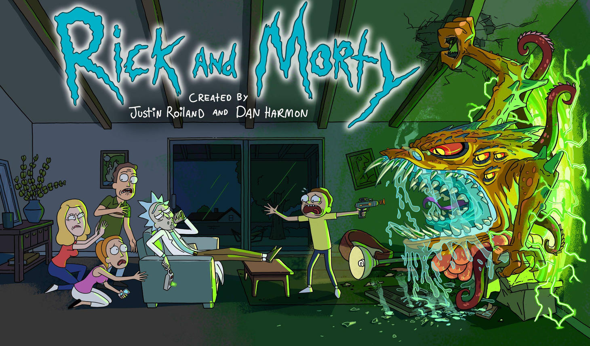

Hello World
CodeTengu Weekly 碼天狗週刊
如果命運的齒輪沒有出差錯，CodeTengu Weekly 都會在 UTC+8 時區的每個禮拜一 AM 10:00 出刊。每週會由三位 curator 負責當期的內容，每個 curator 有各自擅長的領域，如果你在這一期沒有看到感興趣的東西，可能下一期就有了。當然你也可以瀏覽一下前幾期的內容。
目前的 curator 陣容：
- @vinta - I failed the Turing Test - 科幻迷，最近在讀 Dirk Gently 系列
- @saiday - Imnotyourson - 電量給我這種人用就是一種浪費
- @tzangms - Oceanic / 人生海海 - 我最近居然開始在挖礦跟研究區塊鏈了呢
- @fukuball - ImFukuball - 有新工作了，但歡迎直接挖角
- @mingderwang - Ethereum enthusiast
- @kako0507 - 熱愛嘗試新事物的前端工程師
- @chiahsien - 誰能告訴我到底該怎麼處理螢幕觸控壞掉的 iPad Mini 2
- @uranusjr - Smaller Things - 我要成為錯字王
- @kkdai - 態度萬歲 - Learning Deeply....
- @yhsiang
- @johnlinvc - 挑戰自動化家中電器
- @drumrick - 歡迎加入台灣 Kaggle 交流區
- @wancw
你也可以關注我們的 Facebook、Twitter、GitHub 或 Open Source 專案，有很多 weekly 看不到的內容。有任何建議也歡迎來 Gitter 聊聊。
 @vinta
@vinta
Remotely debug a Python app inside a Docker container in Visual Studio Code
之前因為開發環境都 containerized 了，但是偶爾又想要用一下 Visual Studio Code 的 Python debugger，所以就試了一下 Remote Debugging 功能，順便寫了一篇網誌記錄了跟 Flask 的 --reload 併用的奇技淫巧。忍不住抱怨一下，VS Code 的 Python debugger 雖然很炫炮，尤其是 "debug.inlineValues": true，但是啟動速度真的慢到靠北啊。
不過就像 @WanCW 說的，與其一直花時間追求開發環境和正式環境的一致，整天搞那些 configs，還不如用那些時間多寫幾個 test cases 啊。
P.S. 這裡的 remote 主要指的是本機的某個 Docker container，當然也可以真的是遠端的某台機器。
kennethreitz/setup.py: A Human's Ultimate Guide to setup.py
也是出自 @kennethreitz 大神之手，不過這次不是什麼改變 Python 生態系的新專案，而是一個 setup.py 的範例，有自己的 Python package 的人可以參考看看。看了之後才知道，原來有 cmdclass 這麼一個用法啊。
Kubernetes Deconstructed: Understanding Kubernetes by Breaking It Down
在你讀完八百多頁的 Kubernetes 文件之後，這個影片可能會是個很好的複習。
Kubernetes NodePort vs LoadBalancer vs Ingress? When should I use what?
看了半天的 Kubernetes 官方文件，結果反而是在讀了這篇文章之後才終於搞清楚 Service 和 Ingress 的使用場景，嘖。
Getting started with Data Engineering
這篇文章概略地提到了作為一個 Data Engineer 可能會需要碰到的各項技術，一個人要完全掌握這些東西當然是不太可能啦，但是看了那個 Big Data Landscape 的圖還是覺得很血汗啊，大家感受一下。
不過讀完文章之後，最大的心得反而是所謂的 Data Engineer 做的事情跟 Web Backend Developer 其實很像啊，都是圍繞著 Data 本身打轉，在技術上也有相當大的重疊，最大的差別可能是在於人家用的那套 framework 叫做 Apache Spark，逼搞夏趴。
How to Do Code Reviews Like a Human (Part One)
雖然 code review 已經是老生常談了，但是這篇文章寫得真的是好。無論你是那個覺得 code review 是件苦差事的 reviewer 或是老是被要求改 code 改到往心裡去的 reviewee，又或者你們團隊根本還沒開始做 code review，本文都非常值得一讀。
延伸閱讀：
YouGlish - Use YouTube to improve your English pronunciation
因為公司的 System Architect 是加拿大人，所以平常跟他在開會或閒聊都是全英文進行，對土台灣人如我多少還是有點不習慣，最近的困擾是關於某些單字的唸法，一般的英文單字也就算了，畢竟網路上隨便一個字典都有真人發音。但是那些我們平常在用的技術詞彙（例如 framework 或 library 的名字）就不一定在字典裡找得到了。正好前陣子 @SammyLinTw 推薦了 YouGlish 這個網站，它可以直接幫你列出 YouTube 上關於某個單字的發音片段，實用！
大家感受一下：
延伸閱讀：
 @mingderwang
@mingderwang
Git Rebase Interactive: A Practical Example
git 指令裡面，比較難懂的就是 rebase。這個實戰 YouTube 教你簡單方法如何更改 logs 的順序或註解。注意，只能在不 conflict 的情況下來使用。也只能 rebase 本地端尚未 commit 到遠端的 logs。
Erlang (and Elixir) distribution without epmd
最近台北將會有一場 Ruby 與 Elixir 的研討會，不妨大家來看看 Erlang 文章吧。Erlang 是一個非常容易寫分散式不停頓的軟體的程式語言，其中 default 用 epmd 來尋找分散在網路上不同的節點 (node)。這篇文章，用一個簡單的方式，教大家在 Erlang/OTP 19.0 以後的版本的程式可以跳過 epmd，讓節點更有彈性的加入同一個 network，且跟其他的節點互動。
Requiring modules in Node.js: Everything you need to know
如果你會寫 Node.js 程式，但還是不太了解 modules 是什麼，為何要用 module.exports，以及 require 到底是怎麼運作的，你可以先看這篇文章。作者 Samer Buna 把這些問題用幾個簡單的範例做了清楚的說明。
Blockchain Sharding Issues
一群 Ethereum 開發愛好者，包括 Ethereum 團隊 (招募中)，Parity 成員，以及美國 IC3 研究員，上週在台灣聚會，探討如何解決區塊鏈目前碰到的最大難題，也就是擴充性的問題。最後還在 3/21 Taipei Ethereum Meetup 主辦的 2018 以太坊全明星技術座談會 中與大家分享成果。
有興趣深入研究的人，可以先看看 sharding FAQ 再想辦法實作 sharding 的規格。當然，這也許只是其中一種想法或方法，而且都是在非常初期的研究階段，還有非常多的專案也在想要解決同樣的問題。我想這也是讓大家更有機會在先期就投入區塊鏈的研究，再創佳績。
Otaku is the New Sexy

瑞克和莫蒂：我酗酒、我变态，但我是个好外公
（該文有大量劇透）
在 Twitter 上看到有人分享了 dannvix/NflxMultiSubs，幫 Netflix 加上「雙語字幕」功能的瀏覽器外掛。突然就想到前一陣子因為椎間盤突出在家裡休養的那段日子，除了物理治療和皮拉提斯之外，其他時間好像都是在看 Netflix 啊。說到這裡，忍不住要跟大家分享一下我印象最深的一部作品，Rick and Morty。不誇張，這部真的是我這輩子看過最屌的科幻動畫，有點像是把銀河便車指南裡的英式幽默用 Futurama 和辛普森家庭取代的感覺，第一次看就看傻了我。非常推薦！每一集的片尾都有一段彩蛋，千萬不要錯過了。
不過如果你真的不喜歡動畫，那也可以看 Dirk Gently's Holistic Detective Agency，原著小說的作者正是 Douglas Adams。
由 @vinta 分享。